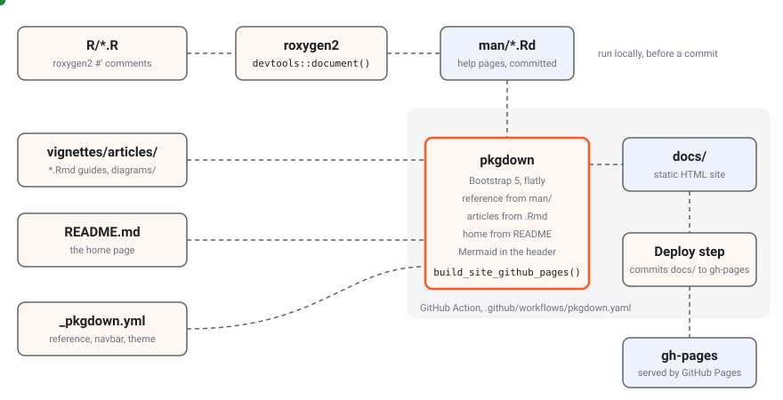

This site is built with pkgdown, the standard documentation site
generator for R packages. Its hand-written guides live in
vignettes/articles/ as R Markdown files, its home page is
the package’s README.md, and its reference section is
generated from the roxygen2 comments in R/, by way of the
help pages in man/. Docs live with the code and change in
the same commit as it.
The diagram below shows how the parts come together in one build.
Blue dots are roxygen2 comments becoming help pages and then reference
pages, orange dots are hand-written articles, the README and the
configuration, and green dots are the finished HTML on its way to GitHub
Pages. The grey area is what the GitHub Action does on every push to
main; the top row is run by hand before a commit.

Previewing and building
The documentation toolchain is roxygen2 and
pkgdown, which devtools installs as its own
dependencies, and rmarkdown, which DESCRIPTION
names under Config/Needs/website. The commands below cover
almost everything, all run in R from the repository root.
devtools::document()
pkgdown::build_site()
pkgdown::preview_site()
pkgdown::build_article("articles/get-started-first-steps")
pkgdown::check_pkgdown()The table below says what each command does.
| Command | What it does |
|---|---|
devtools::document() |
Runs roxygen2 over R/, rewriting man/*.Rd
and NAMESPACE from the comments |
pkgdown::build_site() |
Builds the whole site into docs/: the home page, the
reference and every article |
pkgdown::preview_site() |
Opens the built site in a browser |
pkgdown::build_article("articles/<name>") |
Rebuilds one article, the quickest way to check an edit to one page |
pkgdown::check_pkgdown() |
Checks _pkgdown.yml without building anything,
including that every help page is in the reference index |
Always run devtools::document() after changing a
roxygen2 comment, and commit the regenerated man/ and
NAMESPACE with the code. The published site is built from
the committed man/, so a comment changed without
regenerating man/ does not reach the site.
devtools::document() should print no warnings, and a new
warning is worth reading: most often it is a #' block in
front of a private R6 member, which roxygen2 cannot place.
An article can also be rendered on its own, outside the site and
without touching docs/, which is the quickest way to make
sure it parses:
Rscript -e 'rmarkdown::render("vignettes/articles/project-writing-docs.Rmd", output_dir = tempdir(), quiet = TRUE)'The built docs/ directory is ignored by git and by
R CMD build, and never belongs on main.
Publishing
The site is published on GitHub Pages at https://pramodathani.github.io/tradeR/. The GitHub
Actions workflow .github/workflows/pkgdown.yaml builds it
and deploys it, so nobody publishes by hand. The table below shows what
the workflow does for each kind of event.
| Event | Builds the site | Publishes it |
|---|---|---|
A push to main
|
Yes | Yes |
| A published GitHub release | Yes | Yes |
| A manual run from the Actions tab | Yes | Yes, from the branch it was run on |
| A pull request | No | No |
The flowchart below shows the same thing as a pipeline.
flowchart LR
M["Push to main"] --> B["pkgdown job<br/>build_site_github_pages()"]
R["Published release"] --> B
H["Manual run"] --> B
B --> D["Deploy step<br/>github-pages-deploy-action"]
D --> G["gh-pages branch"]
G --> S["pramodathani.github.io/<br/>tradeR"]
The workflow is the pkgdown.yaml example from
r-lib/actions, the one
usethis::use_pkgdown_github_pages() installs, with its pull
request trigger removed, because the repository takes commits on
main directly. The numbered list below is what its one job
does.
- It checks out the repository and installs pandoc and R, using Posit’s public package manager so that packages arrive as prebuilt binaries.
- It installs every package in
DESCRIPTION, plus pkgdown and tradeR itself from the checkout (local::.), because pkgdown needs the package installed to build its reference pages. Thetalibpackage compiles its bundled TA-Lib C library with CMake, which theubuntu-latestrunner already has, and the system librariesmongoliteneeds are installed through pak’s system requirements lookup. - It runs
pkgdown::build_site_github_pages(new_process = FALSE, install = FALSE), which writes the site todocs/and adds the.nojekyllfile GitHub Pages needs. - It runs
JamesIves/github-pages-deploy-action, which commitsdocs/to thegh-pagesbranch withclean: false, so files ongh-pagesthat this build did not write are kept. GitHub Pages serves that branch.
The job needs contents: write permission to push
gh-pages; everything else is read-only. The workflow needs
no database, no .env, no UBI and no credentials, because no
code is run during the build: every reference example is wrapped in
\dontrun{}, and every article sets
eval = FALSE. Because there is no pull request check, a
broken page is found by running pkgdown::build_site()
locally before pushing, or by the failed run on main
afterwards.
The configuration
_pkgdown.yml holds the whole site configuration. The
table below lists its top-level keys and what each one does for this
site.
| Key | Value here | What it does |
|---|---|---|
url |
https://pramodathani.github.io/tradeR/ |
The site’s address, used for links between pages and for the sitemap |
template |
Bootstrap 5 with the flatly Bootswatch theme |
The look of every page |
template: includes: in_header |
A <script type="module"> that loads Mermaid 11
from jsDelivr and starts it with the neutral theme |
Draws every <pre class="mermaid"> block on every
page |
navbar |
Home, reference and articles on the left; search and GitHub on the right | The menu bar |
reference |
17 sections, from “Connecting to UBI” to “Utilities”, each listing its help pages | The grouping of the reference index |
articles |
The guides, grouped into menus | The articles menu and index |
pkgdown 2.2.1 and roxygen2 8.1.0 built the current site, and
DESCRIPTION records the roxygen2 version under
Config/roxygen2/version. The local build used pandoc 3.10.
DESCRIPTION also sets
Roxygen: list(markdown = TRUE, r6 = TRUE), which the next
section explains, and names the pkgdown site first in URL,
because pkgdown reads the first URL entry as the site’s
address.
How the reference is generated
The reference is generated in two stages. roxygen2 turns the comments
in R/ into help pages in man/, and pkgdown
turns each help page into a page of the site. The steps below are what
happens to one class.
- roxygen2 reads every
#'block inR/. A block in front of anR6::R6Class()call documents the class: its title line,@description,@examplesand@export. Blocks inside the class document its members:@fieldlines for fields and active bindings, and@description,@param,@returnand@detailsin front of each public method. - Because
DESCRIPTIONsetsr6 = TRUE, roxygen2 knows how R6 classes are built. It writes one help page per class, such asman/Equity.Rd, whose first lines say% Please edit documentation in R/assets_equities.R. The page lists the chain of parent classes under “Super classes”, the active bindings, the public methods each under its own heading, and the inherited methods in a collapsed list that links to the class that defines each one. - Because
DESCRIPTIONsetsmarkdown = TRUE, the comments are written in Markdown, so backticks, lists and links work as they do in these articles. -
@exportadds the class toNAMESPACE. Package constants, such as the error parent tables, are documented with@formatand marked@keywords internal, which keeps them out of R’s help index but still gives them a page that_pkgdown.ymlplaces in the reference. - pkgdown turns each
man/*.Rdintoreference/<topic>.htmland builds the reference index from thereferencesections of_pkgdown.yml. A method’s heading becomes an anchor of the formmethod-<Class>-<method>, such asreference/Equity.html#method-Equity-initialize.
man/ holds 201 help pages today. pkgdown refuses to
build when an exported help page is missing from the reference index, so
a new class must be added to a section of _pkgdown.yml.
tradeR-package is the one page left out, because it carries
@keywords internal.
The roxygen2 conventions in this package matter when you write documentation, because each one changes what appears. The table below lists them.
| Convention | Effect |
|---|---|
#' @export on every class |
The class is in NAMESPACE and gets a help page that
must be listed in _pkgdown.yml
|
#' @field before each active binding |
The binding appears under “Active bindings” with its description and type |
#' @details Errors: ... |
The conditions a method signals appear under its “Details”, naming each condition class |
# instead of #' before a private
member |
The private member’s documentation stays in the source and out of
the help page, without the “can’t find matching R6 method” warning a
#' block causes |
\dontrun{} around every example |
The example is shown but never run, by R CMD check, by
pkgdown or by the workflow, because every example needs the live
UBI |
Functions on a class generator described in a bulleted list in
@description
|
Discovery functions such as Equity$search() are
documented, although roxygen2 documents only R6 members |
@keywords internal |
The page is hidden from R’s help index; pkgdown still builds it if
_pkgdown.yml lists it |
Examples in the documentation
Every class carries @examples in its roxygen2 block,
translated from the Examples: sections of the Python
docstrings, and wrapped in \dontrun{}. The class’s
@description ends with a bulleted list naming what each
example shows, so a reader can find the one they want before reading the
code. pkgdown shows the examples at the bottom of each reference page
without running them.
The Python library also keeps example programs under
examples/ and a runner,
scripts/run_examples.py, that runs every example against
the live UBI. This package has neither. Its behaviour is checked by the
test suite instead, which runs every class against
FakeClient and mocked HTTP responses from
httr2::local_mocked_responses(), so
devtools::test() never reaches UBI.
The examples place real orders.
Many examples place, change and cancel real orders at real brokers,
because they are translations of the Python examples, which are verified
for real. Run one by hand only when that is what you intend. During
development, never run an example that places, modifies or cancels an
order unless it passes dry_run = TRUE, and never run one
that calls flatten(), the holdings methods,
rebalance() or place_orders() against the live
UBI, because those act on positions or holdings that were there before
it ran.
There is no build hook
The Python site needs a build hook,
scripts/documentation_hooks.py, to stop griffe from warning
about every Raises: section that says only
Nothing., which a strict MkDocs build would turn into a
failure. This site needs nothing of the kind. A method that signals no
error simply has no @details Errors: paragraph, and
roxygen2 has no warning to filter.
Why inherited members are only linked
Instrument inherits fourteen analysis classes, and all
27 family classes inherit from it. If every class page reprinted every
inherited method, each family class would carry the whole analysis
surface again. roxygen2’s R6 pages avoid that by design: inherited
methods appear only as links in a collapsed “Inherited methods” list,
and each method is documented once, on the page of the class that
defines it. The Python site had to turn off
inherited_members in mkdocstrings to get the same result,
after a 24 MB class page.
The table below shows the sizes of a few reference pages in the local build of 2026-10-07, which shows that the pages stay usable.
| Page | Size | Why |
|---|---|---|
reference/TradeableInstrument.html |
3.8 MB | The largest page: it documents every order, position and order-book member, including the thirty-two price wrappers, each with its examples |
reference/CandlestickPatterns.html |
1.0 MB | The sixty-one candlestick patterns, each with its examples |
reference/Equity.html |
147 KB | Only its own members, with the inherited ones as links |
Because inherited methods are documented on the defining class, a
link to a method must point at that class’s page. prices()
is on Instrument, the price wrappers are on
TradeableInstrument, and each analysis method is on its
analysis class, such as MomentumIndicators. The command
below finds where a method is defined.
Adding a page
A new article takes two steps: create the R Markdown file in
vignettes/articles/, and add it to the
articles section of _pkgdown.yml. The
reference needs no such step for a page, because it is generated, but a
new class does need its entry in the reference section.
.Rbuildignore excludes vignettes/articles,
so the articles exist only on the site. They are not part of the
installed package, R CMD check never builds them, and
DESCRIPTION needs no VignetteBuilder
field.
Every article starts with the same header and setup chunk, changing
only the title. The setup chunk sets eval = FALSE, so no
code in an article ever runs when the site is built, which matters
because the code would otherwise connect to UBI and could place
orders.
The file name says which menu an article belongs to. The table below lists the names used for the guides translated from the Python site.
| Section | Landing article | Other articles |
|---|---|---|
| Get started | get-started.Rmd |
get-started-<page>.Rmd |
| The R API guide | guide.Rmd |
guide-<page>.Rmd |
| Asset classes | asset-classes.Rmd |
asset-classes-<page>.Rmd |
| Analysis | analysis.Rmd |
analysis-<page>.Rmd |
| Architecture | architecture.Rmd |
architecture-<page>.Rmd |
| Project | project.Rmd |
project-<page>.Rmd |
Every page in the API guide follows one template, modelled on Zerodha’s Kite Connect documentation, so a reader always finds the same things in the same place. The flowchart below shows the order of its parts.
flowchart TB
T["# Title<br/>one or two sentences"] --> S["Summary table<br/>Kind | Member | Description"]
S --> G["Glossary of plain strings<br/>or a link to Vocabulary"]
G --> M["## One heading per member"]
M --> M1["Member header line<br/>kind, signature, UBI route"]
M1 --> M2["#### Parameters"]
M2 --> M3["#### Example<br/>an R chunk"]
M3 --> M4["#### Returns"]
M4 --> M5["#### Errors"]
M5 --> M6["Under the hood"]
A page whose members place orders opens with a danger alert titled “These are real orders.” The level-4 headings keep the per-member subheadings out of the table of contents on the right of the page.
Links
Links to other articles use the article’s HTML name, with no path,
because every article sits in one folder of the built site. pandoc makes
a heading’s anchor from its text in lower case, with spaces turned into
hyphens, punctuation dropped and underscores kept, so the heading
place_order has the anchor #place_order.
pandoc also drops anything before the first letter, so a numbered
heading such as “4. Start the containers” has the anchor
#start-the-containers.
Links to a class’s reference page go up one level into
reference/, and a method adds its anchor. This page links
to Equity and to prices()
with this markup:
[`Equity`](../reference/Equity.html)
[`prices()`](../reference/Instrument.html#method-Instrument-prices)The home page, which is the README, is ../index.html.
When you are not sure a reference page or anchor exists, cite the file
path in backticks instead, such as R/assets_instruments.R,
or check the built docs/reference/ folder.
Links to UBI’s behaviour go to its published site with absolute URLs
under
https://pramodathani.github.io/unified_broker_interface/,
such as Order
engine. Link to UBI rather than repeating its documentation here,
and check an anchor against the heading in UBI’s
docs/rest-api/*.md before using it.
Visual conventions
Every article aims for at least one diagram or chart, and uses tables, lists and code blocks wherever the content has that shape. The site has no custom stylesheet, so everything is built from what pkgdown, Bootstrap and Mermaid provide. The table below lists every visual element the articles use and how to write it.
| Element | Use it for | How |
|---|---|---|
| Table | Anything with repeating fields | Markdown table, with a full sentence before it |
| Mermaid diagram | Flows, sequences, class hierarchies, state machines | A raw <pre class="mermaid"> block; a
sequenceDiagram starts with autonumber
|
| SVG diagram or chart | The headline diagrams, with moving dots, and charts of real numbers | An .svg file in
vignettes/articles/diagrams/, included as a Markdown
image |
| R code | Every example | An ```{r} chunk, which the setup chunk keeps from
running |
| Shell commands and other text | Commands, captured output that is not R output |
```bash or ```text fences |
| Alert | Warnings, tips and notes | A fenced div such as ::: {.alert .alert-warning}
|
| Link list | Section landing articles | A bulleted list with a sentence before it, one link and one sentence per item |
| Yes and No | A tick or a cross in a table | The words Yes and No, since the site has
no icon set |
The Python site’s content tabs, cards, member badges, member headers, HTTP method badges and status chips came from its own stylesheet, and have no counterpart here. An article says the kind of member in words, such as “active binding” or “places orders”, and names the HTTP method and route in backticks.
R prints its results differently from Python, so an article never shows Python output as if it were R output. Where a page needs a captured value, it says in prose what was captured, when, and that it came from the Python library.
SVG diagrams
The diagrams are hand-written SVG files in
vignettes/articles/diagrams/. Each one is self-contained:
its colours, fonts and animations are defined in a
<style> element inside the file, it has a background
<rect> of its own, and it uses the light colours of
the Python site’s diagrams. The table below lists the classes the
existing files define.
| Class | Draws |
|---|---|
tm-svg |
The root <svg> element, which every other rule is
scoped to |
background |
The white background rectangle |
group |
A grey area grouping boxes, such as “one GitHub Action” |
box |
An ordinary box |
store |
A data store or a folder of output, in a bluish fill |
accent-box |
The box the diagram is about, with an orange border |
wire |
A dashed connector that marches, unless the reader prefers reduced motion |
title, small, mono
|
Bold, muted and code-font text |
dot, dot alt, dot ok
|
Moving dots in orange, blue and green, hidden when the reader prefers reduced motion |
A dot moves along a path with <animateMotion> and
<mpath>. Every id in a file starts with
a prefix unique to that file. This is one connector and its dot from
docs-build.svg, the diagram at the top of this page:
<path id="tr-docs-build-output" class="wire" d="M662,185 L700,185"/>
<circle class="dot ok" r="6"><animateMotion dur="1s" repeatCount="indefinite"><mpath href="#tr-docs-build-output"/></animateMotion></circle>A dot that should wait, so that a request and its answer take turns,
uses calcMode="linear" with keyTimes and
keyPoints, and an <animate> on its
opacity to hide it while it waits. Draw the group areas first, then the
wires and dots, then the boxes, so a dot passing behind a box is hidden
rather than drawn over its text.
Each SVG also carries a <title> and a
<desc> for screen readers. An article includes it as
a Markdown image whose alternative text describes the diagram, with a
sentence before it saying what it shows and what each dot colour
means:
A chart of real numbers is drawn the same way, as a static SVG with
its values written beside the bars, such as line-counts.svg
on Repository
structure. Chart only real numbers, from the code or from a
measurement that the page dates.
Mermaid
Mermaid diagrams are written as text inside a raw HTML block, and the
script in the page header draws them when the page loads. Because the
block is HTML, < must be written <,
> as > and & as
&, so an arrow --> is written
--> and a line break <br/> is
written <br/>. The block below is the
flowchart at the top of Project, as written
in its source.
<pre class="mermaid">
flowchart LR
S["Repository structure<br/>where things live"] --> A["Adding an asset class<br/>the checklist"]
A --> W["Writing these docs<br/>pages, build, publish"]
</pre>Keep node labels short, and never put a semicolon inside label text, because it breaks Mermaid’s parser.
Alerts
Alerts are the coloured boxes, written as pandoc fenced divs with
Bootstrap’s alert classes. The first line is the title in bold, ending
with a full stop, followed by a blank line and the body. Each type has
one job, and alert-danger is reserved.
| Class | Use it for |
|---|---|
.alert .alert-danger |
Only for something that places real orders |
.alert .alert-warning |
A trap that costs time or gives a wrong answer |
.alert .alert-info |
A shortcut, a better way, or background worth knowing |
The block below is the warning used on Get started, as written in its source.
Writing style
Every article follows the same writing rules, so the site reads as one voice. The list below collects them.
- Write in simple language and complete sentences. Every sentence has a subject and a verb, and a heading never stands in for the sentence that introduces a section.
- Name a thing in plain words before, or instead of, its identifier in the code.
- Put a complete sentence before every table, diagram, list and code block saying what it shows. Cells and list items can be short; the prose around them cannot.
- Never split a sentence across lines in the source: one paragraph is one line.
- Keep facts exact. Never invent a value, field name, status code or message. Real output is copied, never reconstructed, and it says where and when it was captured.
- In R code, use
<-, double quotes and two-space indentation, put each element of a multi-elementlist()orc()on its own line, and spell every identifier out in full. - Replace every broker account identifier in captured output with a
placeholder such as
XX000000, and say in a sentence when output was trimmed.